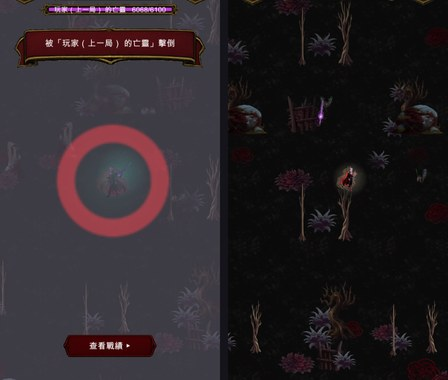

手搓廣告遊戲選集 · 吸血鬼復仇 · 亡靈控場與識別色
四種控場全部生效。定身實測 1 秒內 62% 的幀完全不能動—— 血鎖那個還好，絕對零度那個最壞情況是三分之二的時間站著不動。我維持現狀，數字給你判斷。
| # | 你的回覆 | 我做了什麼 |
|---|---|---|
| ① | 亡靈不可以誤傷小怪 | 沒動。PlayerSink 維持只碰 d.Player |
| ② | 玩家要吃控場，含定身 | 做了。四種全部生效，實測數字在下面 |
| ③ | 混戰要分得出誰打的 | 做了。青綠 #3df2c8 |
| ④ | 名字維持真名 | 沒動 |

實測（VR_ONLY=wcc）。量的是推著搖桿卻沒有位移的幀數佔比，
不是問屬性回傳值——那才是玩家真正感受到的東西：
減速：IsSlowed=True ✓
易傷：倍率=1.20 ✓
擊退：位移 0.72 單位 ✓
定身 1.0 秒：推著搖桿的 191 幀裡有 118 幀完全沒位移（62%）
實作上的幾個細節：
Moving = false ——不然霜痕靴照樣鋪冰，被定住反而變成好事我沒有自己調短或拿掉任何東西。 下面是實際的數字，讓你決定要不要調。
| 來源 | 定身時間 | 間隔 | 最壞情況「不能動」的比例 |
|---|---|---|---|
| ⛓️ 血鎖（血鎖裁判的職業效果） | 1.0 秒 | 冷卻 2.0 秒 | 約 33% |
| 🧊 絕對零度（武器） | 1.5 秒 | 武器冷卻 2.4 秒 | 約 62% |
血鎖那個還好——1 秒不能動、然後 2 秒可以跑，讀得出節奏，而且它要 亡靈貼到你身上才觸發（半徑 110）。
絕對零度那個是真的危險。 它是半徑 230 的大範圍、沒有額外冷卻， 碰上一個帶絕對零度的亡靈，你會有將近三分之二的時間站著不能動， 而同時間場上還有一整波小怪在往你身上撞。這在一款「走位就是你的血量」的 遊戲裡，體感會非常接近「被鎖住等死」。
| 選項 | 做法 | 代價 |
|---|---|---|
| A（我推薦） | 加一段定身免疫：被定身結束後 3 秒內不會再被定身 | 節奏變成「被定 1.5 秒 → 保證有 3 秒可以跑」，最壞情況從 62% 降到 33%，但保留了「被定住」的壓迫感 |
| B | 亡靈的定身統一夾在 0.8 秒 | 最簡單，但絕對零度的「凍結」就跟血鎖沒差別了 |
| C | 維持現狀 | 如果你要的就是「遇到冰系亡靈＝硬仗」，那現在就是對的 |
在你回覆之前我維持現狀（選項 C）。
亡靈如果帶 ⛓️ 血鎖（負值擊退），它的彈丸會把你往它那邊拉 ——跟它打敵人時的行為對稱。被一隻拿著鎖鏈的亡靈一邊拉近一邊打， 讀起來很對味，這一項不用動。
#3df2c8| 條件 | 為什麼青綠符合 |
|---|---|
| 場上不能已經有這個顏色 | 玩家武器是金／紅／藍／綠系、敵人暗紅、經驗寶石天藍、血月獵殺者紅——青綠是空的 |
| 暗色背景上要夠亮 | 這遊戲的底色是 #0d0206，青綠對比很高 |
| 但不能比玩家自己的攻擊搶戲 | 只染 55%，保留武器原本的辨識度 |
| 要跟亡靈本體連得起來 | 亡靈本體是紫紅，青綠跟它形成對比但同屬「不是玩家的東西」 |
彈丸為什麼要墊光暈而不是只染色：武器圖示本身有自己的配色（飛刀是銀的、 魔法飛彈是紫的），只把
sr.color乘上去的話有些武器幾乎看不出差別。 後面墊一圈柔光是「不管原本什麼顏色都看得出來」的做法，而且它在彈體後面， 不會蓋掉武器原本的辨識度。
彈丸是物件池重用的。 光暈如果不在 Init 關掉，亡靈用過的那顆彈丸
下次被玩家拿去用時還帶著青綠光暈——識別色就反過來騙人了，
而那種錯只會在混戰打久了之後偶爾出現，非常難查。已經在 Init 關掉。
VrFx.PlaySequence 播的那些手繪特效序列（刀光、冰波、雷擊、火海）
目前沒有染色——那支函式不吃顏色參數。所以亡靈放的落雷跟你放的落雷，
那道電弧長得一樣。
要補的話是改 VrFx.PlaySequence 加一個 tint 參數，會動到全遊戲每一支特效的
呼叫點（十幾處）。我沒有動它，因為彈丸／環繞物／光環／腳下光環已經涵蓋了
大部分的視覺量，而且那是風險相對高的改動。要補跟我說。
IDamageSink 的 9 項等價性測試重跑，全部仍然逐位相同——
這次的改動沒有碰到敵人側那條路徑。